This version keeps the original Garmin content and image set, but gives the page a more distinctive visual identity: less like a standard assignment website and more like a performance console built around Garmin’s data-driven ecosystem and Strava’s social energy.
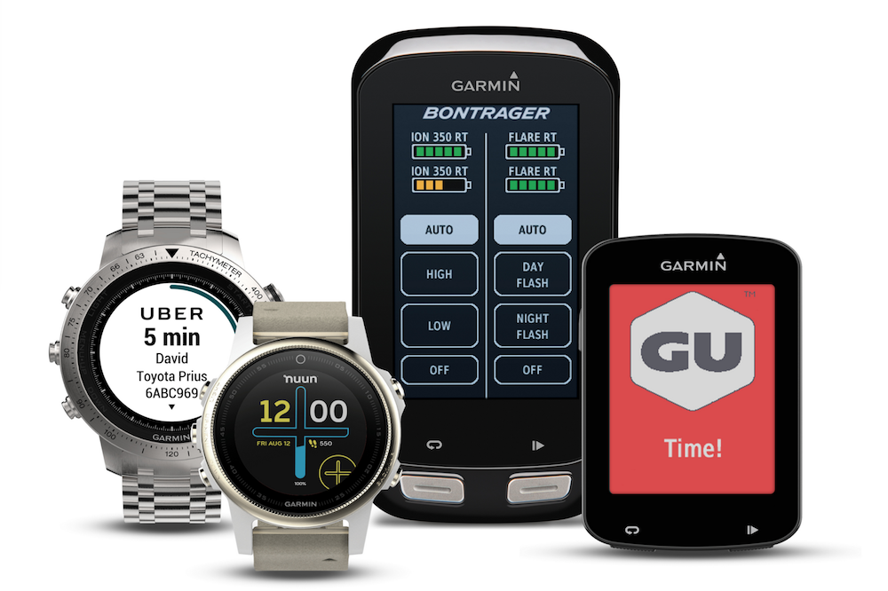
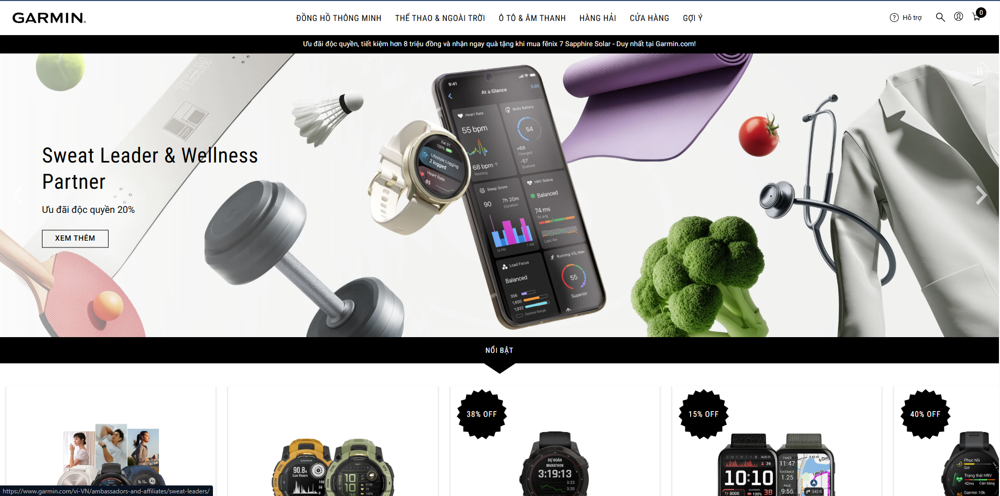
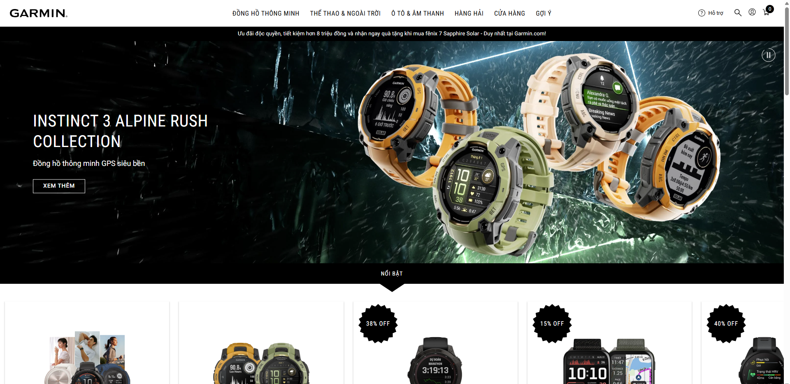
Garmin is introduced here not only as a GPS brand, but as a connected performance ecosystem built around devices, apps, data and ongoing interaction.
This e-portfolio applies digital marketing concepts to analyse Garmin as a real brand in the wearable technology market. Garmin is best known for GPS products, but it has also become a strong brand in sports and fitness technology, especially through its Forerunner series. The brand is popular with runners, cyclists and other active users because it offers more than just a smartwatch. Garmin also creates value through fitness data, mobile apps and a connected digital ecosystem.
This portfolio focuses on four main areas of Garmin’s digital marketing. First, it uses the Ladder of Engagement to explain how Garmin moves users from simple interaction to deeper participation. Second, it evaluates Strava as a platform that is closely linked to Garmin users. Third, it assesses Garmin’s website through a website checklist. Finally, it discusses a digital trend that is highly relevant to Garmin today. Overall, the portfolio shows how digital marketing ideas can be applied to a real brand in a practical way.
This section explains how Garmin moves users from simple viewing and reviewing into stronger participation through Garmin Connect, product feedback and co-creation.
The Ladder of Engagement shows that customers do not all interact with a brand in the same way. Some people only look at content, while others leave reviews, join discussions, share experiences or even help create value for the brand. This model is useful because it shows that engagement can develop from simple reactions into deeper participation, which is usually more valuable for a company over time (Smith and Zook, 2016).
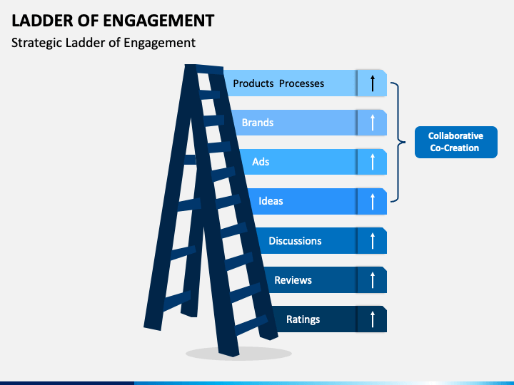
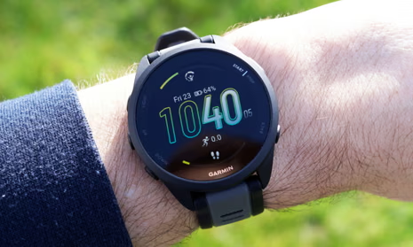
Garmin is a good example of this model because it creates engagement at several different levels. At the lower level, users can leave ratings and reviews on Garmin products. This is important because reviews help other buyers compare devices and feel more confident before purchase. In a product category like sports watches, where people often compare features very carefully, this type of feedback matters a lot.
At the discussion level, Garmin creates stronger interaction through Garmin Connect. Users can upload workouts, view performance data, compare activities and join fitness challenges. This means the relationship with Garmin does not stop after the product is bought. Instead, users keep coming back to the app and continue interacting with the brand through their daily fitness habits.
Garmin also benefits from the ideas level because users often discuss what they want to see in future products, such as new health features, better design or more detailed training tools. This kind of feedback is useful because it gives the brand a clearer understanding of customer needs.
At the highest level, Garmin moves towards co-creation through Connect IQ. This platform allows developers and advanced users to create watch faces, widgets and data fields for Garmin devices. In this case, users are not only consuming the product, but also adding value to the wider Garmin ecosystem. This is a stronger form of engagement because the user becomes part of the brand experience itself.
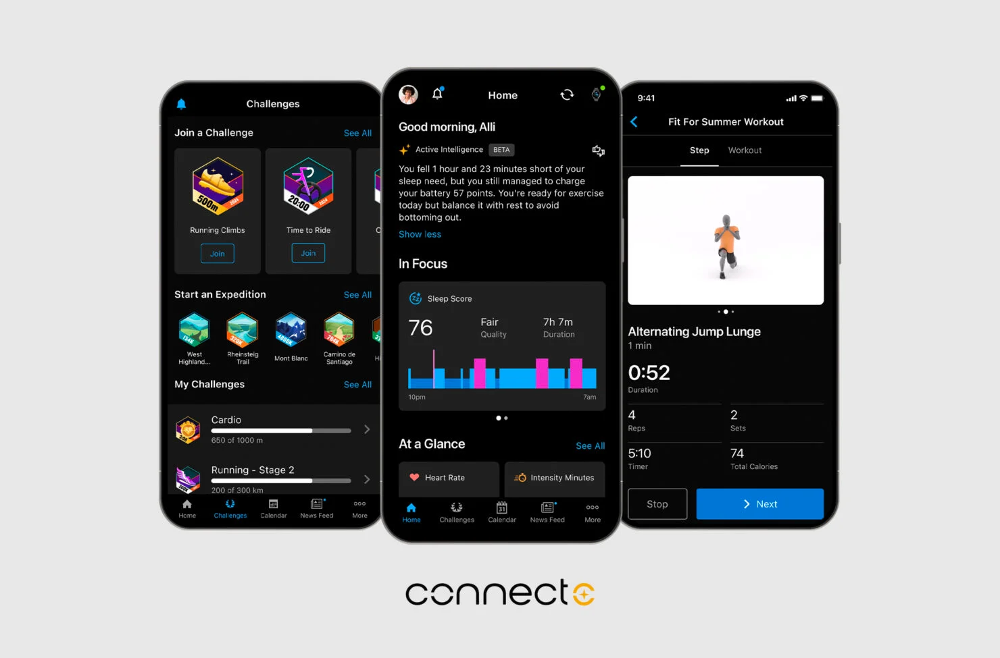
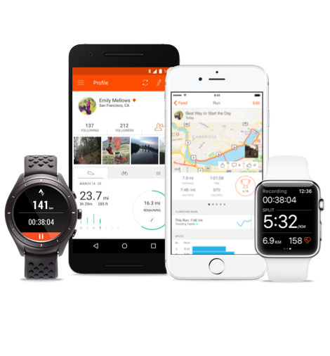
This section is styled more like a compact performance dashboard, which fits Garmin’s product category and helps the evaluation feel more structured.
Websites are still an important part of digital marketing because they help users find information, compare products and make decisions. This is especially important for Garmin because its products are technical and usually require careful comparison before purchase (Chaffey and Ellis-Chadwick, 2019).
| Criterion | What it supports |
|---|---|
| Navigation | Helps users move through product categories such as running, cycling, outdoor and health. |
| Product information | Supports comparison through specifications, visuals, feature explanations and compatibility details. |
| Mobile design | Keeps browsing and comparison accessible on smaller screens. |
| Trust and support | Reassures users through help pages, FAQs, support details and warranty information. |
| Performance | Affects how smooth and manageable the experience feels when pages are content-heavy. |
Garmin performs strongly in navigation because the website separates products clearly into categories such as running, cycling, outdoor and health. This makes it easier for users to browse and find a suitable device. The comparison tools are also useful because many Garmin watches appear similar at first, but actually differ in features and price. However, the website can still feel slightly crowded because Garmin offers many product lines.
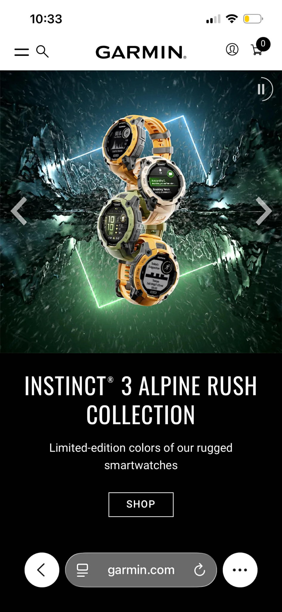
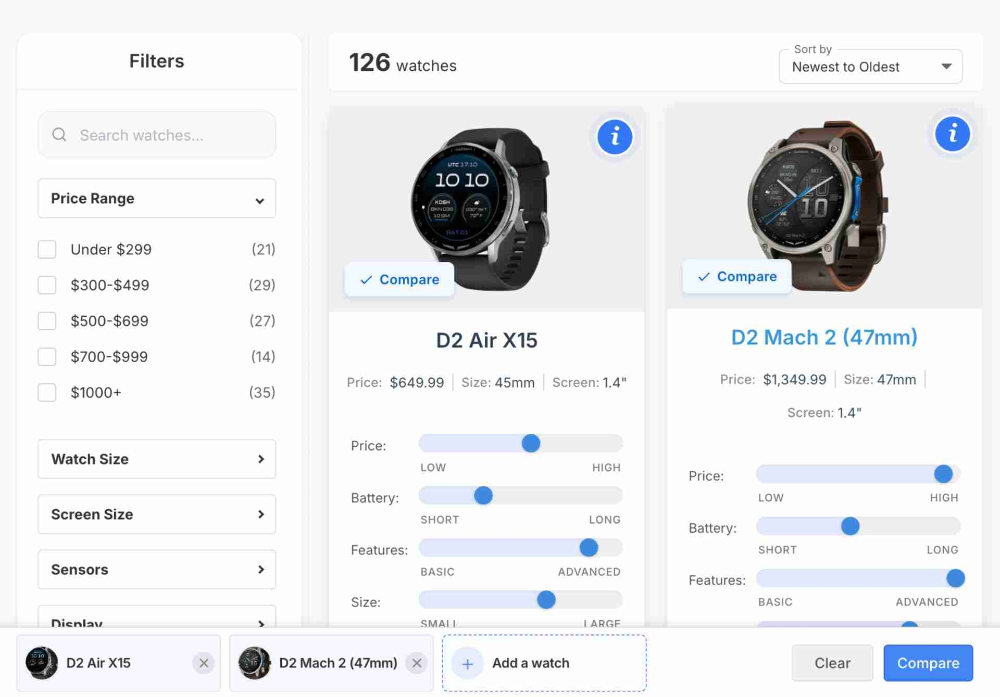
Content presentation is one of Garmin’s strongest areas. Product pages include detailed specifications, feature explanations, visuals and compatibility details. This is important because smartwatches are high-involvement products, so users often want clear information before purchase. The website does a good job of reducing uncertainty and helping users compare models.
Garmin also performs well in trust and support. The help centre, FAQs and warranty information help reassure users, especially because a smartwatch is a relatively expensive product. In addition, the site works well on mobile devices, which is important because many users research products on their phones before buying.
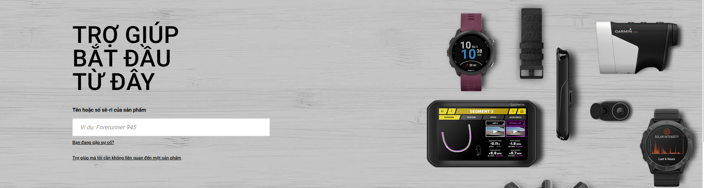
| Category | Score |
|---|---|
| Navigation | 4.5/5 |
| Product information | 5/5 |
| Mobile design | 4.5/5 |
| Trust and support | 4.5/5 |
| Performance | 4/5 |
| Overall score | 4.5/5 |
Overall, Garmin’s website presents a strong and professional experience. The main weakness is that pages with rich visuals and detailed product content can feel slightly slower or more complex than simpler websites. Even so, the website performs well across the main criteria.
Overall, Garmin’s website performs very well as both a digital marketing platform and an e-commerce platform. Its biggest strengths are navigation, product information and trust-building. The main improvement area would be simplifying some pages so that decision-making feels faster and easier, especially on mobile devices.
The visual language returns to Garmin teal here, because the trend is centred on personalised data, retention and the brand’s long-term ecosystem value.
A digital trend that is especially relevant to Garmin is the growth of personalised wearable data combined with user-generated content. Today, people expect more than simple step counting. They want useful insights about sleep, recovery, readiness and performance, presented in a way that feels relevant to their own lives.
This trend matters because digital marketing is moving away from only selling product features. Instead, brands are creating value through more personalised digital experiences. In Garmin’s case, features such as Body Battery, sleep score and suggested workouts help the product feel more useful and more personal.
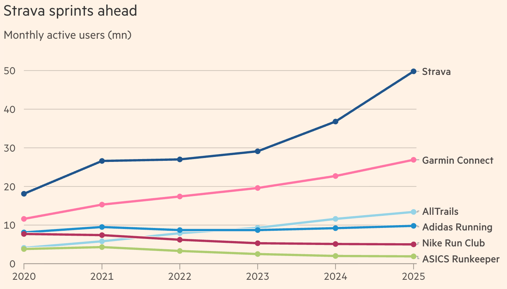
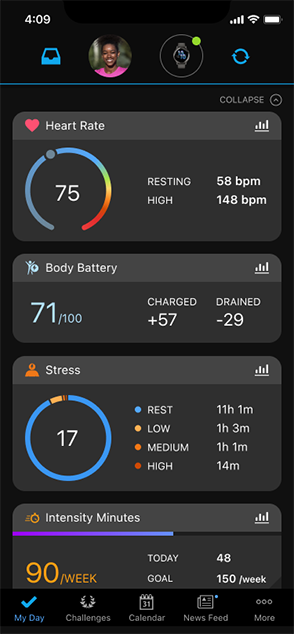
For Garmin, this trend is important because personalised data gives users a reason to return to the app regularly. Instead of using the device only when exercising, users continue engaging with Garmin throughout the day. This strengthens retention because the user becomes connected not only to the watch, but also to the data and insights behind it.
From a marketing point of view, this trend also encourages user-generated content. When users complete a run, improve a metric or reach a training goal, they often want to share it. This means personal data can become social content. For Garmin, this is valuable because these posts act like indirect promotion and show other people what the product can do in a more natural and believable way.
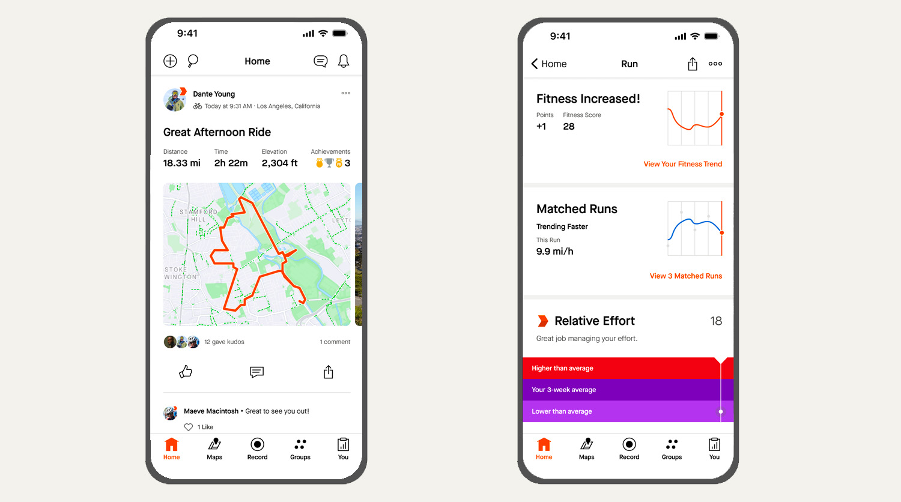
The final section closes the route and pulls the main findings together.
This e-portfolio has shown that Garmin performs strongly across different areas of digital marketing. Through the Ladder of Engagement, the brand encourages users to move from simple product interaction to deeper participation through reviews, apps and customisation. In relation to social media, Strava is an effective platform because it supports community, motivation and content sharing in a way that fits Garmin’s target users. Garmin’s website also performs well, especially in navigation, product information and trust-building. Finally, the trend analysis shows that personalised wearable data and user-generated content are highly relevant to Garmin’s future digital marketing. Overall, Garmin has built a strong digital presence, but it still needs to keep improving user experience and maintaining trust in order to stay competitive.
Core references retained from the assignment version.
Chaffey, D. and Ellis-Chadwick, F. (2019) Digital marketing. 7th edn. Harlow: Pearson.
Smith, P.R. and Zook, Z. (2016) Marketing communications: offline and online integration, engagement and analytics. 6th edn. London: Kogan Page.
Tuten, T.L. and Solomon, M.R. (2017) Social media marketing. 2nd edn. London: Sage.
Evaluation of a Social Media Platform
Strava gets its own warmer visual tone here so the page reflects the contrast between Garmin’s technical ecosystem and Strava’s social, competitive energy.
3.1 Introduction to a Social Media Platform
The selected platform for this section is Strava. Strava is highly relevant to Garmin because many Garmin users connect their devices to it in order to upload workouts, track progress and interact with other athletes. Unlike more general social media platforms, Strava is built around fitness activity, so it matches Garmin’s target audience very well.
From a marketing point of view, Strava is useful because it turns exercise into visible and shareable content. When users post a run, a ride or a training result, they are also sharing a lifestyle linked to performance and self-improvement. This makes Strava important for Garmin, because it supports both interaction and visibility in a natural way.
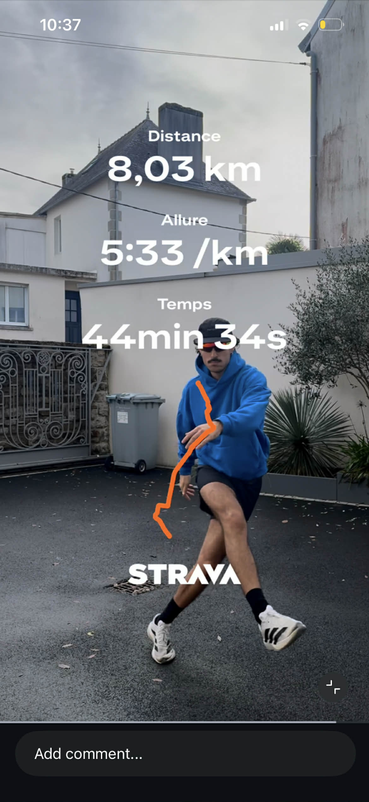
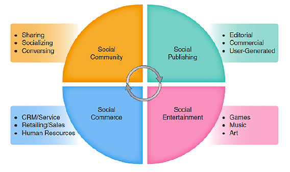
3.2 Evaluation of Strava using the Four Zones of Social Media Framework
A useful way to evaluate Strava is through the Four Zones of Social Media framework, which includes social community, social publishing, social entertainment and social commerce (Tuten and Solomon, 2017).
First, Strava works strongly as a social community platform. Users can follow one another, join clubs, comment on activities and give kudos. These features make the platform feel social rather than just technical. For Garmin, this is valuable because the brand becomes connected to a wider community of active users, not only to the device itself.
Second, Strava is also effective in social publishing. Garmin users can upload route maps, performance summaries and workout results directly from their devices. This means that a normal fitness activity can become shareable content. In many cases, users also repost this content on other platforms, which increases visibility even more.
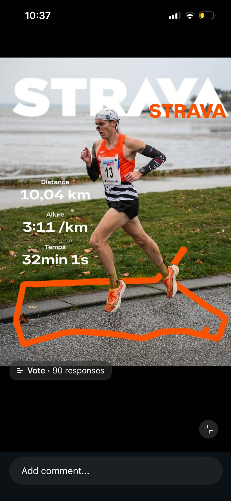
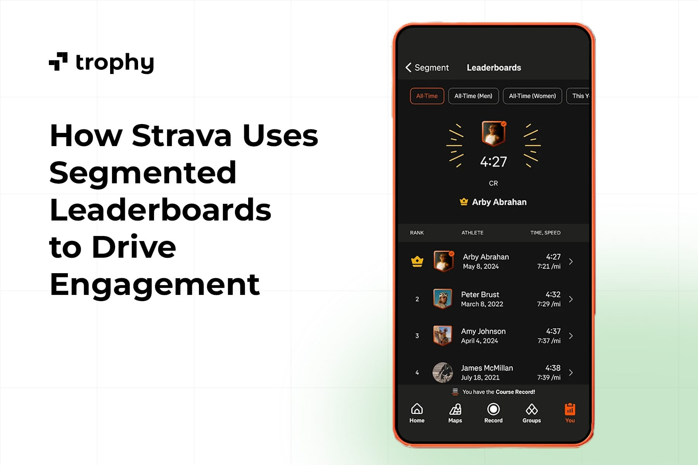
Third, Strava has a clear social entertainment role. Features such as leaderboards, challenges and segments make the app more competitive and motivating. This is important because it encourages repeat usage and keeps users engaged for longer. Garmin benefits from this because its devices often provide the data that powers these features.
Finally, Strava has some social commerce value, although this is the weakest area. The platform is not mainly used for direct shopping, but branded challenges and partnerships can still influence purchase behaviour. For Garmin, the value here is more indirect, because stronger engagement on Strava can increase interest in more advanced devices and accessories.
Overall, Strava is an effective platform for Garmin because it supports community, content sharing and motivation. Its strongest value is not direct selling, but the way it helps create a digital fitness culture that fits Garmin’s brand very well.